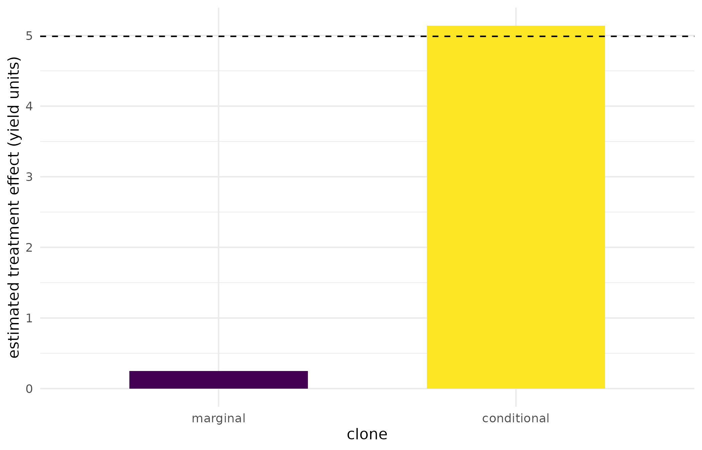

Why
A data owner about to send a synthetic table to a collaborator needs to know what it protects, what it does not, and what happens if a column’s sensitivity is set wrongly. This vignette covers all three, with examples that trigger the package’s safeguards.
masque gives no formal privacy guarantee such as
differential privacy. It makes stand-in tables that keep the structure
of an experiment, so analysis code can be written before the real data
are used. Read this vignette before sharing any masque
output beyond your own machine.
What
The recipe holds the real labels, the original column names and the seed. With the synthetic it undoes every alias, so keep it with the original data and never send it with the synthetic. The design assumes that only the synthetic crosses the trust boundary:
| Actor holds | Wants to learn | What masque protects |
|---|---|---|
| Synthetic only | Original raw values | By default, every outcome and covariate value, replaced by independent draws. In the default and collaborate modes, treatment and categorical covariate labels replaced by codes, and ids and free text dropped. Categorical design labels are coded in the default mode, and in collaborate mode only a detected environment is. In collaborate mode, numerics are re-drawn from the observed distribution and jittered within a measurement step, so individual values may be near-exact copies, though not linked to their rows. Optionally, the column names |
| Synthetic + recipe | Original raw values | Nothing: together they undo every alias |
| Recipe only | Original raw values | The row values, which the recipe does not hold. It does hold the real labels, the original column names, the seed and each numeric column’s range |
| Synthetic + external side information | Identity of treatments / sites | Where labels are aliased or coded, the vocabulary and its order. A
preserved design footprint or a keep column is
recognisable, level frequencies are unchanged, and side information can
often match them |
Conditional clone (conditional = TRUE) |
Outcome mean of a treatment or design level | Nothing: the clone reproduces the outcome mean of each treatment, block and environment level. A level with only a few plots reveals close to its real mean; a level with a single plot is pooled with the other single-plot levels first |
masque keeps enough structure for a pipeline to run
unchanged. Three modes set the balance between privacy and fidelity.
Every translation is written to a private recipe, and a clone meant to
be shared is audited when it is made.
It does not make output safe for public release. It does not hide rare strata, small designs, thin site-by-year cells or personal details in a column whose name does not give them away, and it does not change pipeline code.
Every column carries a role (what it is) and an
action (how deeply it is masked: keep,
noise, scramble, alias or
drop). role_options() lists the pairs the
package accepts. The mode argument of mask()
chooses the defaults, so the common case needs no per-column work.
By default, every outcome and covariate is simulated independently.
Each numeric column keeps only an eleven-point summary: its 1st
percentile, deciles and 99th percentile. Only the experimental design
and the pattern of missing values are kept exactly, and labels are
replaced by codes. This is mode = "null". It keeps none of
the relationships among outcome and covariate values. The design layout,
the joint pattern of missing cells and which columns are constant within
a unit remain visible.
If a pipeline needs those relationships, choose a mode that keeps
them. mode = "local" is for the data owner’s own
development and keeps labels as they are.
mode = "collaborate" keeps the same structure for a clone
shared with someone else, with labels aliased, numerics jittered and the
audit run at mask time:
| Knob |
mode = "null" (default) |
mode = "local" |
mode = "collaborate" |
|---|---|---|---|
| Design columns | structure exact; categorical labels coded
(<col>_D001), numeric columns kept |
kept | kept; a categorical environment detected with high confidence is aliased |
| Treatment labels, numeric doses included | aliased (trt_001) |
kept | aliased (trt_001) |
| Categorical covariate labels | drawn uniformly over the levels, coded
(<col>_L001) |
kept | aliased (<col>_L001) |
| Numeric outcomes and covariates | drawn independently from a piecewise-linear curve through the 1st percentile, the deciles and the 99th percentile, so every draw lies between the 1st and 99th percentiles; whole numbers stay whole, and rounding can take one just outside; a column with fewer than 12 finite values takes the standard draw | Gaussian copula with empirical-quantile marginals (may emit observed values) | the same, plus within-resolution jitter, with whole numbers stochastically rounded. A value can fall up to half a measurement step outside the observed range, and a whole number up to one full step, so a column whose minimum is 0 can show -1. A conditional clone can go further, because it adds level effects after the draw |
| Date / time columns | drawn independently within the approximate range, class preserved | row-permuted with class preserved | row-permuted with class preserved |
Identifiers (id) |
dropped | kept | dropped |
Free text (text: a character column in which more than
half the values are distinct) |
dropped | kept | dropped |
| Columns constant within a design unit | one independent draw per unit; the standard draw when fewer than 12 units are observed | one value per unit, drawn from the real unit values | one value per unit, jittered, or row by row when there are fewer than five units |
| NA mask | preserved cell-by-cell | preserved cell-by-cell | preserved cell-by-cell |
conditional = TRUE |
refused | available | available |
audit_mask() |
automatic at mask() time |
on demand | automatic at mask() time |
handover() |
accepted | refused unless allow_local = TRUE
|
accepted |
print(recipe) |
redacted; reveal_maps() shows the maps |
redacted; reveal_maps() shows the maps |
redacted; reveal_maps() shows the maps |
Example
What a default clone keeps
A small trial with four sites, a site-level rainfall, a sowing date, a soil class and two missing yields shows each default action at work:
null_trial <- data.frame(
site = factor(rep(c("Roseworthy", "Minnipa", "Turretfield", "Hart"),
each = 6L)),
rep = rep(seq_len(3L), 8L),
sown = as.Date("2021-05-01") + sample(0:30, 24L, replace = TRUE),
soil = factor(sample(c("clay", "loam", "sand"), 24L, replace = TRUE)),
rainfall = rep(c(300, 420, 510, 380), each = 6L),
yield = round(rnorm(24L, 3, 0.5), 2),
note = sprintf("plot note %d", seq_len(24L))
)
null_trial$yield[c(2L, 9L)] <- NA
plan_null <- propose_roles(null_trial, detect = FALSE)
knitr::kable(
plan_null[, c("col", "role", "action")],
caption = "The default masking plan."
)| col | role | action |
|---|---|---|
| site | design | alias |
| rep | design | keep |
| sown | date | noise |
| soil | covariate | noise |
| rainfall | covariate | noise |
| yield | outcome | noise |
| note | text | drop |
s_null <- synthetic(mask(null_trial, plan_null, seed = 1L))
#> Warning: rainfall has 4 observed units, fewer than 12. A summary of so few gives the values back,
#> so it was drawn as standard noise.
knitr::kable(
head(s_null, 8L),
digits = 2,
caption = "The first eight rows of the default clone."
)| site | rep | sown | soil | rainfall | yield |
|---|---|---|---|---|---|
| site_D003 | 1 | 2021-05-16 | soil_L002 | 5 | 3.38 |
| site_D003 | 2 | 2021-05-07 | soil_L001 | 5 | NA |
| site_D003 | 3 | 2021-05-10 | soil_L003 | 5 | 3.34 |
| site_D003 | 1 | 2021-05-02 | soil_L001 | 5 | 2.92 |
| site_D003 | 2 | 2021-05-27 | soil_L003 | 5 | 2.89 |
| site_D003 | 3 | 2021-05-23 | soil_L002 | 5 | 2.95 |
| site_D004 | 1 | 2021-05-03 | soil_L001 | 4 | 2.95 |
| site_D004 | 2 | 2021-05-26 | soil_L002 | 4 | 3.34 |
The site labels are codes and each site keeps its six plots.
soil is drawn uniformly over three coded levels. The sowing
dates are drawn within the range of the real ones. Rainfall is constant
within each site, so it gets one draw per site. Four sites are fewer
than the twelve observed values a summary draw needs, so rainfall takes
the standard draw and mask() warns. The free-text
note is dropped. The missing yields stay in the same rows,
and every drawn yield lies within the 1st and 99th percentiles of the
real ones:
identical(is.na(s_null$yield), is.na(null_trial$yield))
#> [1] TRUE
tapply(s_null$rainfall, s_null$site, function(x) length(unique(x)))
#> site_D001 site_D002 site_D003 site_D004
#> 1 1 1 1
range(s_null$yield, na.rm = TRUE)
#> [1] 2.455462 3.583464
quantile(null_trial$yield, c(0.01, 0.99), na.rm = TRUE)
#> 1% 99%
#> 2.3814 3.6527noise = "standard" ignores the values and uses only each
column’s type. A 0/1 column is drawn from Bernoulli(0.5), a proportion
from Beta(2, 2), non-negative whole numbers from Poisson(5), other whole
numbers from N(0, 5) rounded, other non-negative numbers from Gamma(2,
1), any other number from N(0, 1), and dates uniformly within the year
2000. Rainfall, recorded in whole millimetres, therefore comes out near
5:
s_std <- synthetic(
mask(null_trial, plan_null, seed = 1L, noise = "standard")
)
knitr::kable(
head(s_std[, c("site", "sown", "rainfall", "yield")], 4L),
digits = 2,
caption = "The first rows of a clone drawn with `noise = \"standard\"`."
)| site | sown | rainfall | yield |
|---|---|---|---|
| site_D002 | 2000-07-21 | 5 | 2.77 |
| site_D002 | 2000-03-25 | 5 | NA |
| site_D002 | 2000-05-13 | 5 | 1.10 |
| site_D002 | 2000-01-24 | 5 | 1.26 |
Two columns with the same type flags draw the same values under one seed, whatever their means, because the flags are all a standard draw reads.
The summary is small, but it is not nothing. Three facts bound what it gives away. A column of eleven or fewer finite values can be read back exactly from its eleven points, which is why such a column takes the standard draw. Below 101 values the 1st percentile is interpolated from the minimum, so the minimum enters the summary, and the maximum enters it the same way through the 99th percentile. And many clones of one table, each drawn under a different seed, estimate the eleven points ever more closely. A clone should therefore be made once and shared once, as for a second jitter of the same table: a second draw under a new seed adds nothing for the developer and narrows the estimate for anyone holding both.
Hiding design labels
The default mode already codes categorical design labels. In local
and collaborate mode design columns are byte-identical, apart from a
detected environment in collaborate mode, which preserves the
experimental layout exactly, labels included. A publicly registered
trial layout is a fingerprint. To keep the structure but hide the site
or block labels in those modes, set a design column’s action to
alias:
df <- data.frame(
site = factor(rep(c("Roseworthy", "Minnipa", "Turretfield"), each = 6L)),
rep = rep(seq_len(3L), 6L),
yield = rnorm(18L)
)
plan <- propose_roles(df, mode = "collaborate", detect = FALSE)
plan <- set_role(plan, "site", role = "design", action = "alias")
s <- synthetic(mask(df, plan, mode = "collaborate", seed = 1L))
site_names_gone <- !any(as.character(s$site) %in% as.character(df$site))
site_names_gone
#> [1] TRUE
knitr::kable(
as.data.frame(table(s$site), stringsAsFactors = FALSE),
col.names = c("aliased site", "plots"),
caption = "The three-site structure survives even though the labels do not."
)| aliased site | plots |
|---|---|
| site_D001 | 6 |
| site_D002 | 6 |
| site_D003 | 6 |
Aliasing a design column breaks byte-identity, so local mode never
does it by default, and collaborate mode does it only for a detected
environment. Names can be hidden the same way:
mask(..., alias_names = TRUE) replaces every retained
column name with an opaque code that the recipe inverts on the
round-trip, and alias_names = c("site", "yield") hides only
those names.
What an alias does and does not hide. The alias
vocabulary is fixed and sorted (trt_001,
trt_002, …), but which level receives which alias is drawn
from a random permutation, so for a six-level column there are 720
equally likely maps. This matters because the vocabularies in field
research are routinely public: a variety roster, an N-rate ladder, a
site list. The same draw governs the join keys mask_set()
shares across tables.
Two limits remain, both for the data owner to manage:
-
The seed is confidential material. The permutation
comes from the seeded stream, so the same call with the same seed
reproduces the same map, exactly as it reproduces the same synthetic
values. Publishing the seed beside the synthetic lets anyone who can
rerun the call recover the map. Keep the seed with the recipe, or pass
seed = NULLwhere reproducibility is not required and take a fresh map each call. -
Frequencies are not hidden. Aliasing is a bijection
on labels: the count of each level is unchanged by design, because the
design footprint is what makes the clone useful. A vocabulary whose
level counts are known and distinct is still matchable one level at a
time.
audit_mask()reports each column’s number of levels and its smallest level count.
An alias therefore raises the cost of re-identification. It cannot be relied on against a determined attacker, and none of it is a differential-privacy guarantee.
Numeric treatments
A dose or a nitrogen rate is a numeric treatment. Its values are
often the most recognisable part of a trial, so the default and
collaborate modes alias them, as they do treatment labels. The clone
carries trt_001, trt_002, … as text, and the
recipe turns them back into the exact numbers:
rates <- data.frame(
block = factor(rep(seq_len(4L), each = 5L)),
nitro = rep(c(0, 0.2, 0.4, 0.6, 0.8), 4L)
)
rates$yield <- round(80 + 40 * rates$nitro + rnorm(20L, sd = 5), 1)
plan_rates <- propose_roles(rates, mode = "collaborate")
m_rates <- mask(rates, plan_rates, mode = "collaborate", seed = 1L)
knitr::kable(
head(synthetic(m_rates), 5L),
digits = 1,
caption = "The first block of the clone: each N rate is an opaque label."
)| block | nitro | yield |
|---|---|---|
| 1 | trt_002 | 85.9 |
| 1 | trt_005 | 93.2 |
| 1 | trt_003 | 99.1 |
| 1 | trt_004 | 113.2 |
| 1 | trt_001 | 84.5 |
Every block still holds each rate once, so the design is intact. With
action = "scramble" the rates stay numbers and are permuted
among themselves instead. A numeric treatment left at keep
or scramble in the default or collaborate mode audits HIGH,
because every real rate stays visible.
The conditional clone: mimicking the treatment effect
In local and collaborate mode, numeric synthesis re-simulates every scrambled numeric column from one Gaussian copula with empirical-quantile marginals, fitted on the whole table. That preserves each column’s marginal distribution and, approximately, the global correlation, which is enough to develop most pipelines. It does not keep the relationship between treatment and outcome. The synthetic outcomes are drawn from the pooled distribution and the treatment labels are relabelled independently, so a model fitted on the clone sees no association between an arm and its response. A pipeline whose whole purpose is to estimate a treatment effect would silently give the wrong answer on such a clone.
mask()’s conditional = TRUE argument fixes
this. It fits and samples the copula within each treatment-by-design
stratum rather than pooling, so a row’s synthetic outcome inherits
the location of the treatment that row carries. The treatment effect a
model estimates is reproduced within sampling tolerance. A default clone
keeps no treatment effect by design, so mask() refuses
conditional = TRUE there and asks for
mode = "local" or mode = "collaborate".
The contrast is easiest to see on a two-arm trial with a known effect:
set.seed(42)
n <- 600L
arm <- factor(rep(c("ctrl", "treat"), each = n / 2L))
# A real +5-unit effect of the treated arm on yield.
yield <- 10 + 5 * (arm == "treat") + rnorm(n, sd = 2)
trial <- data.frame(genotype = arm, yield = yield)
plan <- propose_roles(trial, mode = "local", detect = FALSE)
plan <- set_role(plan, "genotype", role = "treatment", action = "scramble")
plan <- set_role(plan, "yield", role = "outcome")
true_effect <- coef(lm(yield ~ genotype, trial))[["genotypetreat"]]
true_effect
#> [1] 4.988538The next chunk clones the trial both ways from the same seed and re-estimates the effect on each clone:
marg <- mask(trial, plan, mode = "local", seed = 1L, conditional = FALSE)
cond <- mask(trial, plan, mode = "local", seed = 1L, conditional = TRUE)
effect_of <- function(m) {
coef(lm(yield ~ genotype, synthetic(m)))[["genotypetreat"]]
}
effect_marg <- effect_of(marg)
effect_cond <- effect_of(cond)
knitr::kable(
data.frame(
clone = c("marginal", "conditional"),
estimated_effect = c(effect_marg, effect_cond),
true_effect = true_effect
),
digits = 3,
caption = paste0(
"The treated-arm effect, re-estimated on each clone against the ",
"true effect fitted on the original trial."
)
)| clone | estimated_effect | true_effect |
|---|---|---|
| marginal | 0.249 | 4.989 |
| conditional | 5.138 | 4.989 |
The marginal clone collapses the effect toward zero. The conditional clone recovers it. Both clones still match the pooled marginal of the outcome:
knitr::kable(
data.frame(
source = c("original", "marginal clone", "conditional clone"),
mean_yield = c(
mean(trial$yield), mean(synthetic(marg)$yield),
mean(synthetic(cond)$yield)
),
sd_yield = c(
sd(trial$yield), sd(synthetic(marg)$yield),
sd(synthetic(cond)$yield)
)
),
digits = 3,
caption = paste0(
"Both clones preserve the pooled mean and SD of yield; only the ",
"conditional clone preserves the arm-to-arm difference."
)
)| source | mean_yield | sd_yield |
|---|---|---|
| original | 12.451 | 3.183 |
| marginal clone | 12.496 | 3.083 |
| conditional clone | 12.497 | 3.199 |
Figure: the effect on each clone
effect_df <- data.frame(
clone = factor(
c("marginal", "conditional"),
levels = c("marginal", "conditional")
),
estimated_effect = c(effect_marg, effect_cond)
)
ggplot2::ggplot(
effect_df, ggplot2::aes(x = clone, y = estimated_effect, fill = clone)
) +
ggplot2::geom_col(width = 0.6) +
ggplot2::geom_hline(yintercept = true_effect, linetype = "dashed") +
ggplot2::scale_fill_viridis_d(guide = "none") +
ggplot2::labs(
x = "clone", y = "estimated treatment effect (yield units)"
) +
ggplot2::theme_minimal()
Estimated treatment effect (yield units) on the marginal versus conditional clone, against the true effect fitted on the original trial (dashed line). The marginal clone collapses the effect toward zero; the conditional clone recovers it.
The conditioning columns (the treatment plus any retained design columns) are recorded on the recipe, so the choice is auditable:
recipe(cond)@conditional
#> [1] TRUE
recipe(cond)@conditioning_cols
#> [1] "genotype"
recipe(cond)@conditioning_used
#> [1] "genotype"
recipe(cond)@fallback_frac
#> [1] 0conditioning_cols is what the call asked for,
conditioning_used is the stratum the clone got, and
fallback_frac is the share of rows pooled into the fallback
stratum. They can differ, because a conditional clone needs enough rows
per stratum to fit a stratum-local copula, and the finest stratum
available is rarely the one that has them. On a replicated factorial of
six N rates by three varieties by four replicates, treatment crossed
with every retained design column is seventy-two cells of one row.
mask() therefore walks a coarsening
ladder: it drops design columns until the cells hold at least
five rows. Treatment columns are never dropped. Rows still in cells that
are too small at the last rung are pooled into one fallback stratum.
The default ladder (ladder = "hierarchy") drops plot row
and column positions first, then blocking columns, then environment
columns, so a site is never given up before the replicates inside it. It
carries the main effect of every dropped column into the clone as an
additive shift. The site, replicate and block means of the original
therefore survive even when the copula is fitted within the treatment
alone. The threat table above lists what that discloses. The recipe
lists the shifted terms as conditioning_shifted.
ladder = "levels" reproduces clones made with masque 0.11.1
to 0.12.0: it drops the column with the most levels first and keeps
nothing of it.
Any coarsening, and any residual pooling, raises a classed
masque_conditional_degraded warning naming the columns
given up and the pooled share, and both facts are written onto the
recipe. A pipeline can catch the class if it should stop when its clone
is less conditional than it asked for:
withCallingHandlers(
mask(trial, plan, mode = "local", seed = 1L, conditional = TRUE),
masque_conditional_degraded = function(w) stop(conditionMessage(w))
)Conditional cloning works in local and collaborate mode and with
mask_set(), where each table is stratified by its own
treatment and design columns. With no treatment or design column to
condition on at all, the clone falls back to the global copula and
raises the same classed warning. Use it when the pipeline estimates an
effect and you accept that it discloses each level’s outcome mean.
What the copula keeps: monotone association only
In local and collaborate mode, numeric columns that are re-simulated together share one Gaussian copula, fitted on the normal scores of their ranks. A Gaussian copula holds a single correlation per pair, so it reproduces a monotone association (linear, or any order-preserving curve) but not a dependence that a correlation cannot express. A non-monotone relationship, such as a U-shaped dependence of an outcome on a covariate, reads as near-zero rank correlation and is reproduced as near-independence.
set.seed(7)
n <- 2000L
x_lin <- rnorm(n)
y_lin <- 2 * x_lin + rnorm(n, sd = 0.5) # monotone (linear)
x_u <- runif(n, -3, 3)
y_u <- x_u^2 + rnorm(n, sd = 0.5) # non-monotone (U-shaped)
d <- data.frame(x_lin, y_lin, x_u, y_u)
s <- synthetic(mask(d, propose_roles(d, mode = "local", detect = FALSE),
mode = "local", seed = 1L))
# R-squared of a quadratic fit captures a linear or a U-shaped association.
fit_r2 <- function(x, y) summary(lm(y ~ poly(x, 2)))$r.squared
knitr::kable(
data.frame(
pair = c("monotone (y = 2x)", "non-monotone (y = x^2)"),
original = c(fit_r2(x_lin, y_lin), fit_r2(x_u, y_u)),
clone = c(fit_r2(s$x_lin, s$y_lin), fit_r2(s$x_u, s$y_u))
),
digits = 3,
caption = paste0(
"R-squared of a quadratic fit, original versus clone, for a ",
"monotone and a non-monotone pair."
)
)| pair | original | clone |
|---|---|---|
| monotone (y = 2x) | 0.942 | 0.941 |
| non-monotone (y = x^2) | 0.966 | 0.000 |
The monotone pair keeps its association almost exactly. The
non-monotone pair loses it entirely, so on the clone the covariate
carries no information about the outcome.
conditional = TRUE does not repair this: it preserves the
outcome’s location within each treatment-by-design stratum, not the
curvature of the outcome’s dependence on a continuous covariate. A
pipeline whose modelling step is non-linear (a smoothing spline, a
generalised additive model, a tree, an interaction term) sees on the
synthetic only the monotone part of any relationship in the original. A
good fit there is not evidence that the step behaves correctly on the
real data. Validate such a step by running it on the original through
the recipe.
Columns constant within a trial: the grain
Some columns describe a whole unit rather than a row: the rainfall of
a trial, the soil type of a site, a sowing date. Re-simulated row by
row, such a column would vary inside the trial, which no real trial
does. mask() finds the design unit within which a column
holds a single value and synthesises the column once per unit, writing
each unit’s new value to all its rows. That unit is the column’s
grain:
set.seed(3)
trials <- data.frame(
trial = factor(rep(sprintf("T%d", seq_len(8L)), each = 12L)),
rep = factor(rep(rep(seq_len(3L), each = 4L), 8L)),
gen = factor(rep(sprintf("G%d", seq_len(4L)), 24L))
)
trial_rain <- round(runif(8L, 250, 550))
trials$rainfall <- trial_rain[as.integer(trials$trial)]
trials$yield <- round(2 + trials$rainfall / 200 + rnorm(96L, sd = 0.4), 2)
plan_trials <- propose_roles(trials, mode = "collaborate")
by_unit <- mask(trials, plan_trials, mode = "collaborate", seed = 1L)
by_row <- mask(trials, plan_trials, mode = "collaborate", seed = 1L,
grain = FALSE)
values_per_trial <- function(m) {
s <- synthetic(m)
as.vector(tapply(s$rainfall, s$trial, function(x) length(unique(x))))
}
knitr::kable(
data.frame(
clone = c("grain = TRUE (default)", "grain = FALSE"),
distinct_rainfall_per_trial = c(
paste(values_per_trial(by_unit), collapse = " "),
paste(values_per_trial(by_row), collapse = " ")
)
),
caption = "Distinct rainfall values in each of the eight trials of the clone."
)| clone | distinct_rainfall_per_trial |
|---|---|
| grain = TRUE (default) | 1 1 1 1 1 1 1 1 |
| grain = FALSE | 7 6 7 5 10 9 8 7 |
propose_roles() notes such a column (“Constant within
trial; synthesised per trial”), and the recipe records each grain. The
clone keeps one value per unit. In local and collaborate mode it also
keeps the frequencies of a categorical column across units and the
correlation among columns of the same grain. It does not keep the
correlation between a grained column and the row-level columns, so the
link between rainfall and yield above is lost. Grained columns are not
conditioned on treatment when conditional = TRUE.
In the default mode each unit gets one independent draw. In local
mode the unit values are drawn from the real unit values. In collaborate
mode they are jittered, and a grain with fewer than five units is
synthesised row by row instead, with a
masque_grain_small_units warning, because resampling so few
real values would disclose them. The audit then notes that the clone
does not keep that grain. grain = FALSE synthesises every
column row by row.
Time-to-event outcomes
A clinical table often holds several event times on one row, such as
time to recurrence and time to death, each with a status. Re-simulated
as independent columns, the times would fall out of order. Declaring
them to events keeps them linked. List the times in the
order the events occur:
set.seed(5)
n_pat <- 300L
arm <- rep(c("A", "B"), length.out = n_pat)
t_rec <- rexp(n_pat, ifelse(arm == "A", 1 / 900, 1 / 1400))
t_death <- rexp(n_pat, 1 / 2500)
censor <- runif(n_pat, 30, 3000)
status_death <- as.integer(t_death <= censor)
time_death <- round(pmin(t_death, censor))
status_rec <- as.integer(t_rec < pmin(t_death, censor))
time_rec <- ifelse(status_rec == 1L, pmin(round(t_rec), time_death),
time_death)
patients <- data.frame(arm, time_rec, status_rec, time_death, status_death)
plan_pat <- propose_roles(patients, mode = "collaborate", detect = FALSE)
plan_pat <- set_role(plan_pat, "arm", role = "treatment")
for (cn in c("time_rec", "status_rec", "time_death", "status_death")) {
plan_pat <- set_role(plan_pat, cn, role = "outcome", action = "scramble")
}
m_pat <- mask(
patients, plan_pat, mode = "collaborate", seed = 1L,
events = list(time = c("time_rec", "time_death"),
status = c("status_rec", "status_death"))
)
s_pat <- synthetic(m_pat)
all(s_pat$time_rec <= s_pat$time_death)
#> [1] TRUE
pattern <- function(d) paste(d$status_rec, d$status_death, sep = "/")
knitr::kable(
data.frame(
pattern = names(table(pattern(patients))),
original = as.vector(table(pattern(patients))),
clone = as.vector(table(pattern(s_pat)))
),
caption = "Rows in each recurrence/death status pattern."
)| pattern | original | clone |
|---|---|---|
| 0/0 | 77 | 77 |
| 0/1 | 82 | 82 |
| 1/0 | 93 | 93 |
| 1/1 | 48 | 48 |
Within each status pattern the gaps between events are re-simulated
and summed back into times. The times stay in order, a patient without a
recurrence keeps both times equal, and the count of each pattern is
exact. No final time runs past the longest follow-up observed in its
pattern. The status patterns are permuted across rows, within each arm
when conditional = TRUE, so a row’s pattern is no longer
tied to the patient on that row, except by chance. No hazard model is
fitted, and the clone keeps no relation between a covariate and the
events.
The leakage audit, and a refused write
audit_mask() inspects the synthetic against the original
and grades the leakage of each column. In the default and collaborate
modes it runs automatically and warns at mask() time. The
fixture below is built to trip it: a PII-suspected column kept against
the default, and a categorical covariate with a frequency-one level.
df <- data.frame(
rep = rep(seq_len(3L), each = 20L),
variety = factor(rep(paste0("V", seq_len(6L)), 10L)),
contact_email = factor(rep(c("a@x", "b@y"), 30L)),
rare_treatment = factor(c(
"only_one",
sample(c("alpha", "beta", "gamma"), 59L, replace = TRUE)
)),
yield = rnorm(60L, 5, 1),
stringsAsFactors = FALSE
)
plan <- propose_roles(df, mode = "collaborate")
knitr::kable(
plan[, c("col", "role", "action", "pii_suspected")],
caption = paste0(
"The proposed plan: `contact_email` is auto-flagged ",
"`pii_suspected` and dropped."
)
)| col | role | action | pii_suspected |
|---|---|---|---|
| rep | design | keep | FALSE |
| variety | treatment | alias | FALSE |
| contact_email | text | drop | TRUE |
| rare_treatment | treatment | alias | FALSE |
| yield | outcome | scramble | FALSE |
Suppose the data owner overrides the flag, keeps
contact_email, and makes the rare column a covariate:
plan <- set_role(plan, "contact_email", role = "covariate", action = "keep")
plan <- set_role(plan, "rare_treatment", role = "covariate")
m <- mask(df, plan, mode = "collaborate", seed = 1L)
#> Warning: audit_mask() flagged HIGH leakage on columns: contact_email, rare_treatment
knitr::kable(
audit_mask(m, print = FALSE)[, c("col", "leakage_class", "notes")],
caption = paste0(
"The mask-time audit: `contact_email` and `rare_treatment` both ",
"flag HIGH."
)
)| col | leakage_class | notes |
|---|---|---|
| rep | low | exact-match 100.0% |
| variety | low | levels aliased |
| contact_email | high | PII-pattern column name; kept as-is - visible to collaborators; same-row 100.0% vs chance 50.0% |
| rare_treatment | high | levels aliased; rare level (freq = 1) |
| yield | low | ok |
contact_email (real values kept across the trust
boundary) and rare_treatment (a frequency-one level) are
flagged. mask() raised a classed
masque_high_leakage warning above and recorded the findings
in recipe(m)@warnings. The guided masque()
flow never silences it. While a HIGH finding stands, the package will
not write the synthetic to disk:
out_dir <- tempfile()
masque(df, roles = plan, out = out_dir, mode = "collaborate", seed = 1L,
quiet = TRUE)
#> Warning: audit_mask() flagged HIGH leakage on columns: contact_email, rare_treatment
#> Error in `.gate_release()`:
#> ! Write blocked: the audit flagged HIGH leakage on 2 findings.
#> ✖ Flagged: contact_email, rare_treatment.
#> ℹ Re-role, alias, or drop each flagged column, then mask again.
#> ℹ Or pass `allow_high = TRUE` to write anyway after your own review - the override is recorded on
#> the recipe.
dir.exists(out_dir)
#> [1] FALSENothing is written. The two flagged columns are named in the message,
and the remedy is spelled out (re-role, alias, or drop the column, then
mask again). A data owner who has reviewed the findings and still wants
to proceed can pass allow_high = TRUE. The override is
itself raised as a classed masque_high_override warning and
recorded in the recipe’s warnings, so the exception stays on record.
Each column is also graded on how far its row-by-row match with the
original exceeds what chance gives.
attr(audit_mask(m, print = FALSE), "joint") holds the
table-level checks: rows whose every re-simulated column equals the
original, and rare combinations of retained values. A HIGH table-level
finding blocks the writers as a column finding does.
An outcome left at keep in the default or collaborate
mode hands over the real responses, so it audits HIGH:
trial_kept <- data.frame(
block = factor(rep(seq_len(4L), each = 6L)),
variety = factor(rep(sprintf("V%d", seq_len(6L)), 4L)),
height = round(rnorm(24L, 90, 8)),
yield = round(rnorm(24L, 5, 1), 2)
)
plan_kept <- propose_roles(trial_kept, mode = "collaborate")
plan_kept <- set_role(plan_kept, "yield", role = "outcome", action = "keep")
m_kept <- mask(trial_kept, plan_kept, mode = "collaborate", seed = 1L)
#> Warning: audit_mask() flagged HIGH leakage on column: yield
knitr::kable(
audit_mask(m_kept, print = FALSE)[col == "yield", c("col", "leakage_class")],
caption = "A kept outcome in a collaborate clone."
)| col | leakage_class |
|---|---|
| yield | high |
If the data owner has decided the real outcome may be shared, passing
allow_kept_outcome = TRUE grades the column medium and
records the choice on the recipe:
m_allowed <- mask(trial_kept, plan_kept, mode = "collaborate", seed = 1L,
allow_kept_outcome = TRUE)
knitr::kable(
audit_mask(m_allowed, print = FALSE)[
col == "yield", c("col", "leakage_class")
],
caption = "The same outcome, allowed by the data owner."
)| col | leakage_class |
|---|---|
| yield | medium |
recipe(m_allowed)@allow_kept_outcome
#> [1] TRUEThe table-level checks still apply. When the kept outcome is the only column that would otherwise be re-simulated, the clone matches the original row for row, the whole-row check stays HIGH, and the writers stay blocked.
Small tables
Re-simulating a column of a few rows returns the original values in a new order, and a summary of a few values lies close to the values themselves. The default and collaborate modes therefore refuse a table of fewer than five rows when a column would be scrambled, or drawn as numeric or date noise:
tiny <- trial_kept[1:4, c("block", "yield")]
mask(tiny, propose_roles(tiny, mode = "collaborate"), mode = "collaborate",
seed = 1L)
#> Error in `.check_row_floor()`:
#> ! `df` has 4 rows, fewer than 5, and yield would be re-simulated.
#> ✖ A re-simulated column this short is the original values resampled, so a clone meant to be shared
#> would disclose them.
#> ℹ Keep, alias or drop that column, or mask a table of at least 5 rows.Local mode warns instead. Kept, aliased and dropped columns are not re-simulated, and factor and character noise draws codes only, so a short lookup table of site codes masks in any mode. A logical noise column counts towards the floor, because it is drawn over the values it holds. Five rows is a floor, not a guarantee. A column of a few dozen rows still carries values close to the real ones, and jitter within a measurement step does little to hide them. The same applies to small strata of a conditional clone, which is why its cells hold at least five rows.
Beyond that gate the release decision stays with the data owner.
Whether a synthetic table is appropriate for a given collaborator,
environment, or jurisdiction depends on context the package cannot see.
masque informs that decision. It does not make it.
Multi-table sets
When several tables share a key, mask_set() aliases that
key identically across all of them so the synthetic tables
still join. Permuting the key separately in each table would break the
join.
set_dir <- system.file("extdata", "met_set", package = "masque")
tabs <- read_set(set_dir)
tabs$agronomy[, year := factor(year)]
ms <- mask_set(tabs, mode = "collaborate", seed = 1L, quiet = TRUE)
ag <- synthetic(ms)$agronomy
qa <- synthetic(ms)$quality
join_survives <- setequal(unique(ag$gen), unique(qa$gen))
join_survives
#> [1] TRUE
head(unique(ag$gen), 3L)
#> [1] "gen_K056" "gen_K048" "gen_K017"year is converted to a factor first. As a number it
would be kept with its real values, with a warning, because masque does
not propose aliasing for a numeric environment column. A linked key gets
aliases of the form <col>_K001, such as
gen_K001, from one map shared by every table.
The recipe bundle is private exactly as a single recipe is, and
write_set() never writes it. save_recipe() and
read_recipe() keep it as one .rds file,
audit_mask(ms) returns one audit per table, and
reveal_maps(recipe(ms), table = "agronomy") reveals the
maps of one table.
Geographic coordinates
Latitude and longitude are treated as sensitive:
propose_roles() flags a column whose name looks like a
coordinate (gps, lat/latitude,
lon/longitude) as pii_suspected
and proposes drop. Dropping is the safest choice when the
synthetic does not need locations.
A coordinate is masked unless told otherwise. If a
column with a coordinate-like name is left at keep,
mask() stops. There are three ways to say what happens to
it:
- Declare the pair to
coords, which displaces it. - Give the column
drop,noiseorscramble, which masks it. - Pass
allow_unmasked_coords = TRUEafter deciding the position is not sensitive. The recipe records this, so the decision is visible later.
A column that looks like a coordinate only by the shape of its values raises a warning instead of stopping, because that detection is a guess and a false positive should not block a legitimate mask.
When the synthetic does need plausible coordinates, to exercise a
spatial pipeline say, a plain scramble or noise draw is the wrong tool:
each axis is drawn on its own, which smears a latitude/longitude pair
into a continuous cloud that can land in the sea. masque
offers two purpose-built alternatives.
jitter_coordinates() displaces coordinates in place by a
geographic-masking jitter. The default donut scheme displaces every site
by a random distance drawn uniformly by area from an annulus, in a
random direction, and re-draws until the point falls on land, so a
coastal site is never pushed offshore. The longitude step is corrected
by cos(latitude) so the ground distance matches the
requested kilometres at any latitude, and the NA pattern and the
latitude/longitude pairing are preserved.
sites <- data.frame(
site = c("A", "B", "C"),
lat = c(-34.9, -35.2, -33.6),
lon = c(138.6, 142.0, 148.2)
)
knitr::kable(
jitter_coordinates(sites, "lat", "lon", min_km = 5, max_km = 20, seed = 1L),
digits = 4,
caption = paste0(
"Three sites, each displaced 5-20 km in a random direction and ",
"re-drawn until on land."
)
)| site | lat | lon |
|---|---|---|
| A | -34.7837 | 138.6072 |
| B | -35.2466 | 141.8980 |
| C | -33.7258 | 148.1070 |
A coordinate belongs to a site, not to a row. One
displacement is drawn per site and applied to every row of that site, so
a table holding many rows per physical place (plots within a trial,
samples within a paddock) comes back with one masked coordinate per
place, exactly as the source table has one true coordinate per place. By
default a site is a set of rows sharing an identical input coordinate,
which needs no user action and cannot alter genuinely point-level data.
Where a site’s recorded coordinates differ slightly between rows,
passing the site columns to by consolidates the group to
its centroid.
plots <- data.frame(
trial = rep(c("T1", "T2"), each = 4L),
lat = rep(c(-34.9, -35.2), each = 4L) + c(0, 1e-4, 2e-4, 3e-4),
lon = rep(c(138.6, 142.0), each = 4L)
)
masked <- jitter_coordinates(plots, "lat", "lon", by = "trial", seed = 1L)
#> Warning: 2 sites named by `by` hold more than one input coordinate and were consolidated to the site
#> centroid.
#> ℹ Sites: "T1" and "T2".
#> ℹ Widest internal spread 0 km.
one_coord_per_trial <- nrow(unique(masked[c("lat", "lon")])) == 2L
one_coord_per_trial
#> [1] TRUEGrouping is a confidentiality control, not only a fidelity one. Donut displacement is isotropic, so the mean of many independent draws around one true site converges on that site. Displacing a 360-row trial row by row leaves its centroid a median 0.64 km from the truth, against the 5 km floor the donut was asked for. One draw per site removes that estimator and leaves the full displacement in place. The unit has to be chosen carefully: it is the finest grouping denoting one physical place at one time, so for a multi-year trial series it is location by year rather than location alone, because trials at one named location in different seasons legitimately sit in different paddocks. Each year at the same farm is then a separate draw, and averaging them narrows the area, so a long series at one farm needs a wider donut or one unit per farm.
A site that cannot be placed on land within max_tries
re-draws is set to NA on both axes, with a warning.
masque does not emit a true coordinate inside a table the
caller believes is masked.
Declaring the pair to mask() applies the same
displacement as part of masking, so the coordinates never pass through
the copula. For a table with coordinate columns GPS_S and
GPS_E and a TRIAL column, the call looks like
this:
plan <- set_role(plan, c("GPS_S", "GPS_E"), action = "keep")
m <- mask(df, plan, mode = "collaborate",
coords = list(list(lat = "GPS_S", lon = "GPS_E", by = "TRIAL")),
seed = 1L)The recipe records the grouping each declared pair was masked under,
so the recipe records the site grouping used for each declared pair. A
coordinate declared to coords is retained in the synthetic,
so audit_mask() reports it as medium, noting that
the column was displaced in place. A coordinate kept with its real
values would be HIGH.
synthesise_geospatial() instead re-anchors points around
fake centroids you supply for each region.
How far to displace. The right magnitude is not a constant. It is calibrated to the density of the entities being protected, so that the masked point is spatially k-anonymous: roughly, at least k comparable entities lie closer to the masked point than the true one (Hampton et al., 2010). Individual-level urban health data are typically masked by displacements of the order of a kilometre, because cities are dense (Zandbergen, 2014). Fields and farms are far sparser, so comparable protection needs a much larger displacement. The default donut of 5 to 20 km is chosen to move a point across several properties while keeping it in the same agroclimatic region. A stated k needs the radii calibrated to the local density of farms.
Results
Aliasing a design column hides the site names and keeps the layout. The alias map hides which label is which, but not how often each occurs.
A default clone keeps the experimental design, the missing cells and each column’s approximate range, and none of the relationships among the outcome and covariate values.
The marginal clone keeps the pooled mean and SD of yield but loses the treatment effect (0.25 against a true 4.99), and a pipeline that checks only marginal fidelity would not notice. The conditional clone keeps it (5.14). Neither keeps a non-monotone relationship between two numeric columns.
A column constant within a trial stays constant within it, and linked event times stay in order with exact pattern counts.
The audit caught both planted problems and the write was refused:
dir.exists(out_dir) is FALSE. A kept outcome audits HIGH
unless the data owner allows it, and a default or collaborate table of
fewer than five rows is refused when a column would be resampled. Linked
tables share one alias map for their key, so they still join.
A default or collaborate clone therefore replaces treatment and
covariate labels and re-draws the values. It does not hide the design
footprint or the frequencies of design and treatment levels, and without
conditional = TRUE it does not keep a treatment effect. The
audit flags the wrongly set columns it can see, such as a kept contact
column, before anything is written.
Limits
Everything demonstrated here is a development safeguard, not a disclosure-control guarantee in the formal sense. The alias map raises the cost of a public-vocabulary attack, but a bijection preserves level frequencies. A determined attacker with strong side information about frequencies and structure is not stopped by an alias alone. The Gaussian copula of local and collaborate mode keeps only monotone association, so a pipeline whose core modelling step is non-linear should be validated on the original data through the recipe. The donut jitter’s k-anonymity property is a rule of thumb tied to entity density, not a certified guarantee, and the radius for a given dataset should be chosen with that density in mind. The leakage audit reads what the mask-time comparison can see (flagged names, frequency-one levels, retained coordinates). It cannot detect a disclosure risk that depends on information outside the table, such as an outside dataset an attacker might already hold.
What to read next
Getting started with masque covers the data owner’s side of
a first masking run: masque(), the default clone and how to
opt into structure, the roles-and-actions plan, and multi-environment
detection. Recipe anatomy and the round-trip covers the return
leg: what the recipe stores and how the data owner runs the finished
pipeline on the original with it.
Reproduce
set.seed(1) is set once for the whole document and
drives the default-clone, design-label and N-rate fixtures. The later
leaky-audit and kept-outcome fixtures draw from the stream after
set.seed(5), so they depend on chunk order. The
conditional-clone, copula-shape, grain and events fixtures reseed with
set.seed(42), set.seed(7),
set.seed(3) and set.seed(5), so each of those
sections runs on its own. Every mask(),
mask_set() and jitter_coordinates() call also
passes seed = 1L. Package versions follow.
sessionInfo()
#> R version 4.6.2 (2026-10-29)
#> Platform: x86_64-pc-linux-gnu
#> Running under: Ubuntu 26.04.1 LTS
#>
#> Matrix products: default
#> BLAS: /usr/lib/x86_64-linux-gnu/openblas-pthread/libblas.so.3
#> LAPACK: /usr/lib/x86_64-linux-gnu/openblas-pthread/libopenblasp-r0.3.32.so; LAPACK version 3.12.0
#>
#> locale:
#> [1] LC_CTYPE=C.UTF-8 LC_NUMERIC=C LC_TIME=C.UTF-8 LC_COLLATE=C.UTF-8
#> [5] LC_MONETARY=C.UTF-8 LC_MESSAGES=C.UTF-8 LC_PAPER=C.UTF-8 LC_NAME=C
#> [9] LC_ADDRESS=C LC_TELEPHONE=C LC_MEASUREMENT=C.UTF-8 LC_IDENTIFICATION=C
#>
#> time zone: UTC
#> tzcode source: system (glibc)
#>
#> attached base packages:
#> [1] stats graphics grDevices utils datasets methods base
#>
#> other attached packages:
#> [1] masque_0.18.0
#>
#> loaded via a namespace (and not attached):
#> [1] vctrs_0.7.3 cli_3.6.6 knitr_1.52 rlang_1.3.0
#> [5] xfun_0.62 otel_0.3.0 textshaping_1.1.0 S7_1.0.0
#> [9] data.table_1.18.6.1 jsonlite_2.0.0 labeling_0.4.3 glue_1.8.1
#> [13] htmltools_0.5.9 ragg_1.5.2 sass_0.5.0 scales_1.4.0
#> [17] rmarkdown_2.32 grid_4.6.2 evaluate_1.0.5 jquerylib_0.1.4
#> [21] fastmap_1.2.0 yaml_2.3.12 lifecycle_1.0.5 compiler_4.6.2
#> [25] fs_2.1.0 RColorBrewer_1.1-3 maps_3.4.4 systemfonts_1.3.4
#> [29] farver_2.1.2 digest_0.6.39 viridisLite_0.4.3 R6_2.6.1
#> [33] pillar_1.11.1 bslib_0.12.0 withr_3.0.3 tools_4.6.2
#> [37] gtable_0.3.6 pkgdown_2.2.1 ggplot2_4.0.4 cachem_1.1.0
#> [41] desc_1.4.3References
Hampton, K. H., Fitch, M. K., Allshouse, W. B., Doherty, I. A., Gesink, D. C., Leone, P. A., Serre, M. L., & Miller, W. C. (2010). Mapping health data: Improved privacy protection with donut method geomasking. American Journal of Epidemiology, 172(9), 1062–1069. https://doi.org/10.1093/aje/kwq248
Zandbergen, P. A. (2014). Ensuring confidentiality of geocoded health data: Assessing geographic masking strategies for individual-level data. Advances in Medicine, 2014, 567049. https://doi.org/10.1155/2014/567049